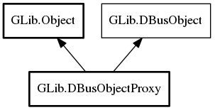

DBusObjectProxy
Object Hierarchy:
Description:
A DBusObjectProxy is an object used to represent a remote object with one or more D-Bus interfaces.
Normally, you don't instantiate a DBusObjectProxy yourself - typically DBusObjectManagerClient is used to obtain it.
Namespace: GLib
Package: gio-2.0
Content:
Properties:
Creation methods:
Methods:
Inherited Members:
All known members inherited from class GLib.Object

All known members inherited from interface GLib.DBusObject